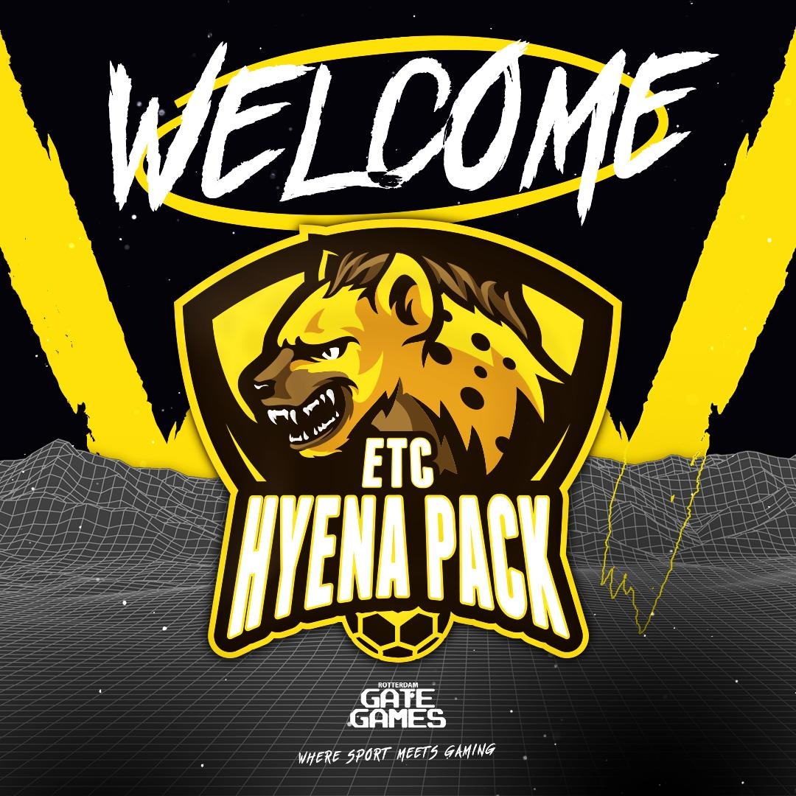

HOME | BESTUUR | TRAININGSTIJDEN | ACTIVITEITEN | Teams | Esports | Agenda | Paaskamp | Contact |
In Rotterdam omarmen we de populariteit van gaming en esports, we ervaren de innovatiekracht en de sociale meerwaarde en zien kansen om esports en gaming te koppelen aan (sport)verenigingen. Aan de ene kant om verenigingen toekomstbestendiger en aantrekkelijker te maken en aan de andere kant om een fysieke plek voor gaming en esports te bieden waar je elkaar ontmoet, samen competitief kan gamen en waar combinaties te maken zijn met sporten en bewegen.
Rotterdamse sportverenigingen experimenteren volop met esports. Zoals een interactieve esportwall in de kantine, waar je na de wedstrijd Fifa, fortnite of andere spellen op kunt spelen. of een interactieve basketbalcompetitie waar je vanuit je woonkamer aan mee kunt doen. ETC heeft met veel enthousiasme meegewerkt aan dit traject van sportsupport en heeft de ETC Hyena pack opgericht.
